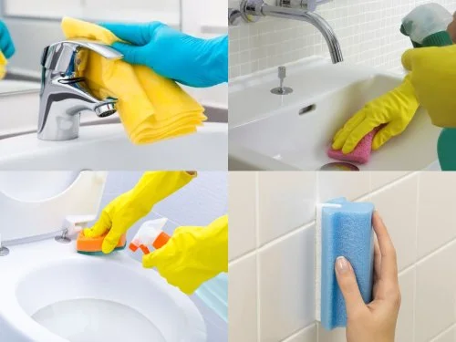

All experts undergo strict background checks and skill tests.
Not satisfied? We'll make it right, no questions asked.
Our pros show up exactly when you need them, every time.
What are you looking for?
Explore our curated selection of 30+ specialized service categories
Top Rated Services
Handpicked favorites and trending services loved by our growing community of happy homeowners.
Home Deep Cleaning
Home Deep Cleaning service me poore ghar ki professional cleaning ki jati hai. Isme floor scrubbing, dust removal, bathroom sanitization, kitchen degreasing aur furniture cleaning include hota hai. Trained professionals modern tools aur eco-friendly chemicals use karke ghar ko hygienic aur fresh banate hain.

Bathroom Cleaning
Bathroom Cleaning service me tiles, floor, washbasin, mirror, toilet seat aur fittings ki deep cleaning ki jati hai. Hard water stains aur bacteria remove kiye jate hain jisse bathroom hygienic aur odor-free ho jata hai.
Kitchen Cleaning
Kitchen Cleaning service me kitchen slabs, cabinets, sink, tiles aur chimney area ki deep cleaning ki jati hai. Oil grease aur food stains ko remove karke kitchen ko hygienic aur safe banaya jata hai.
Water Tank Cleaning
Water Tank Cleaning service me tank ke andar se sludge, dirt aur bacteria ko remove kiya jata hai. High pressure cleaning aur anti-bacterial treatment se tank safe aur clean banaya jata hai.